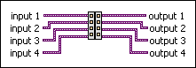

Synchronize Data Flow VI
Owning Palette: Synchronization VIs and Functions
Requires: Base Development System
Passes through the values of the input wires after the upstream code executes.
Use this VI to synchronize multiple parallel code paths at a single point of data flow to ensure a certain execution order.

 Add to the block diagram Add to the block diagram |
 Find on the palette Find on the palette |